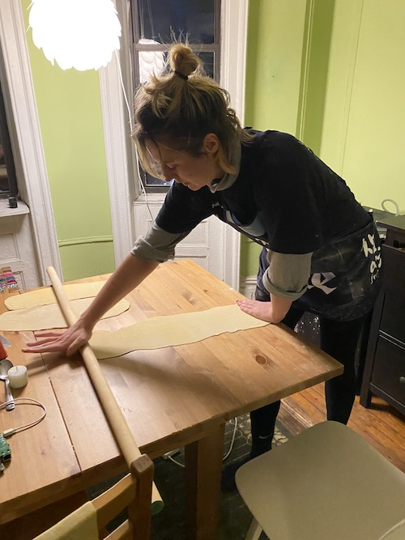
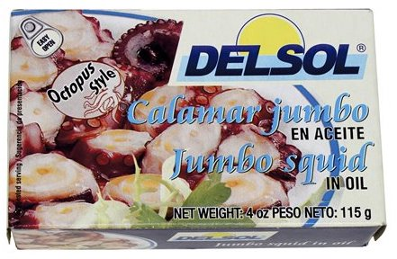
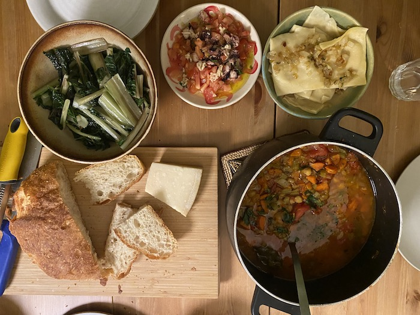

03.22.2020
ravioli party
We made some squash ravioli last night, and it was really lovely! A nice thing to do if you're stuck at home and, apart from eggs (and cheese/parmesan if you include it, you don't have to) it can be made only with storecupboard ingredients.

The long part is really kneading and rolling out the dough: it's stiff and springy, which made it hard to work into thin sheets. The trick is swapping between sheets as you roll, so you wait for them to dry out a little and lose some elasticity. We wrote up the recipe here We also broke open some Del Sol 'Squid in Garlic Sauce, Octopus Style' from the fish library (a market basket purchase, not sure if available in nyc) to make bruschetta! We're not into eating octopus cause they're very smart, squid on the other hand are dumb, and thriving due to increased ocean temperatures... While the flavour of the garlic sauce wasn't very apparent, the squid itself was nice: needs a squeeze of lemon, some salt and pepper as it's got a bit of that stinky squid taste, but worked great with tomatoes and garlic. (you can see it center top). Dan made the beautiful loaf!  That morning, we also tried some russian tinned mackerel that we got at Netcost (another great supermarket, but more on that later) ages ago: it was... ok, very plain, not a great cut of mackerel. Workable but not the best! Go for their Riga sprats instead... extremely smoked, and you get like 1000 per tin.